Operadores em JS
Uma das maneiras mais comuns de formar expressões em JavaScript é usar operadores, como segue:
Os operadores atuam sobre os valores (operandos) para produzir um novo valor.
Os operadores aritméticos são os mais comuns:
- 3 + 2 = 5: adição
- 3 – 2 = 1: subtração
- 3 * 2 = 6: multiplicação
- 3 / 2 = 1.5: divisão
- 3 % 2 = 1: resto da divisão inteira
- 3 ** 2 = 9: potência

Leve em consideração a precedência dentro dos operadores.


Atribuições simples

Auto-Atribuição

Simplificando atribuições

Incremento


Relacionais
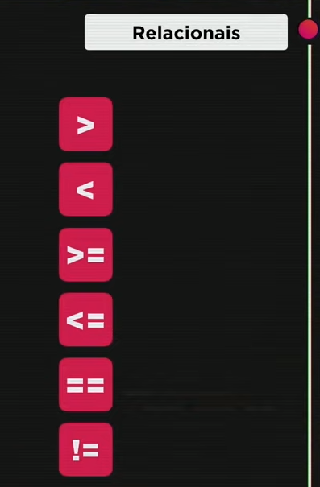
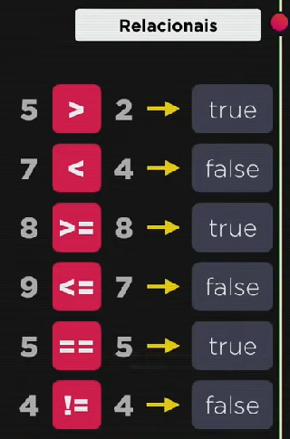
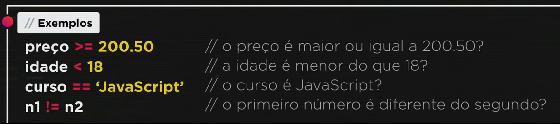
Operadores de Identidade
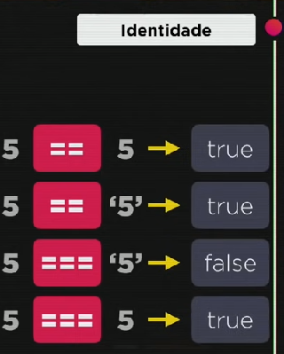
Lógicos
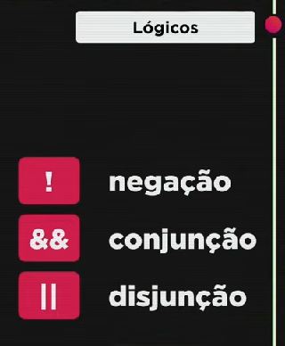
Lógico negação
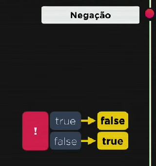
Lógico Conjunção
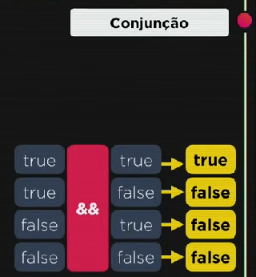
Lógico Disjunção
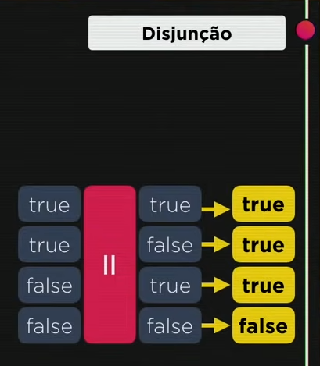
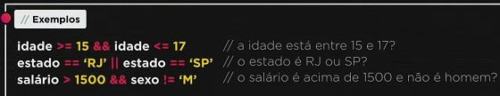
Ordem de precedência de operadores
- 1º - Aritiméticos
- 2º - Relacionais
- 3º - Lógicos
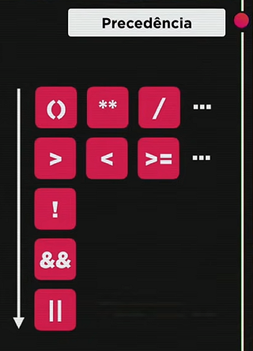
Operadores Ternários
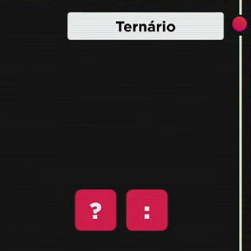
Formado por três operandos
- 1º operando é um teste lógico
- 2º operando é o resultado do teste quando resultado for verdadeiro
- 3º operando é o resultado do teste quando resultado for falso
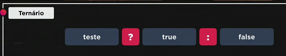